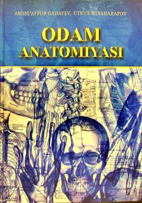

OATibbiyot oliy o'quv yurtlari talabalari uchun odam anatomiyasidan fundamental darslik.
Mazkur darslik tibbiyot oliy o'quv yurtlari talabalari uchun mo'ljallangan bo'lib, odam anatomiyasining fundamental asoslarini o'z ichiga oladi. Kitobda inson a'zolari va tizimlarining tuzilishi, shuningdek ularning qon hamda nerv bilan ta'minlanishi rangli rasmlar yordamida batafsil yoritilgan. Undan tibbiyot texnikumlari o'quvchilari va amaliyotchi shifokorlar ham foydalanishlari mumkin.